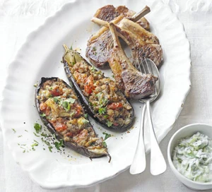
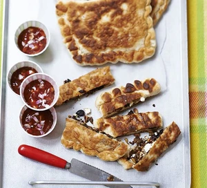

Turkish Recipes
Turkish one-pan eggs & peppers

Menemen is a traditional Turkish dish that's healthy and brilliant for brunch, lunch or supper. Serve with warm pitta bread for scooping up the delicious sauce and runny egg yolks
Go to recipeImam bayildi with BBQ lamb
There are hundreds of versions of this Turkish aubergine dish. It is authentically quite oily, but reduce the oil if you prefer
Go to recipeTurkish pizza with spiced pomegranate beef & feta

Homemade pizza always wins over takeaway- try this new topping idea of spiced mince, pickled cherry peppers, feta cheese and pine nuts
Go to recipeTurkish gozleme
A savoury Turkish pastry that's made with bread. Stuff with spiced lamb, feta, raisins and pine nuts and serve with tomato and pomegranate dip
Go to recipe